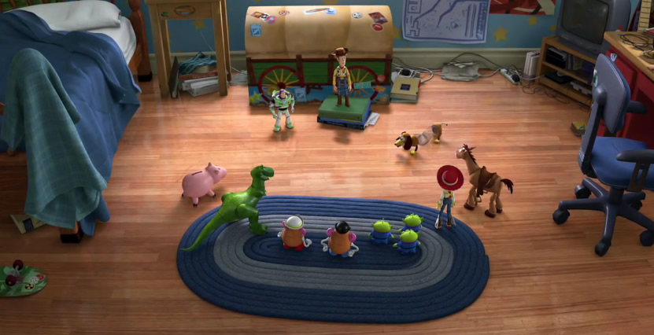

Wondering where the timer and navigation is? I disabled it for this page. Another great feature of OmniSlide is the ability to set options specific to a single slide!
TESTING THE CONTENT THINGY
AGAIN HERE TOO
AGAIN HERE TOO
AGAIN HERE TOO
Create new slider from XML
Destroy XML Slider